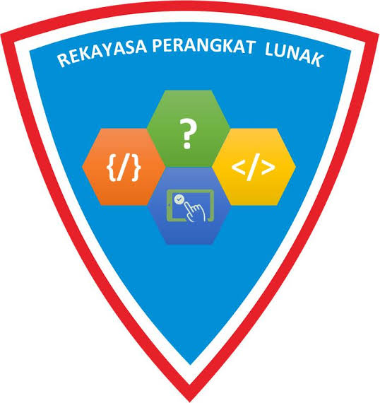
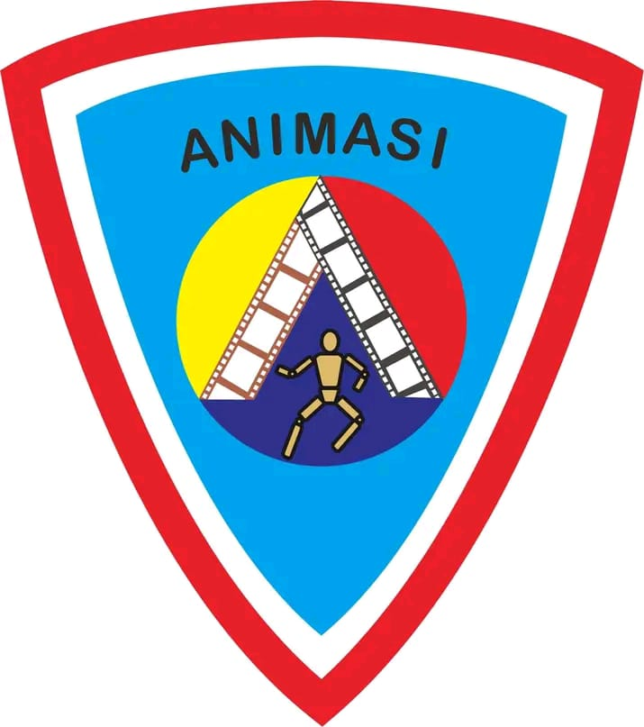

jurusan kami

Rekayasa perangkat lunak
Jurusan RPL, atau Rekayasa Perangkat Lunak, adalah salah
satu bidang studi di dunia teknologi informasi yang fokus
pada pengembangan perangkat lunak komputer. Jurusan ini
mengajarkan siswa tentang berbagai aspek pengembangan
perangkat lunak, termasuk perancangan, pengkodean,
pengujian, dan pemeliharaan aplikasi perangkat lunak.
Selain itu, jurusan RPL juga memperkenalkan siswa pada
konsep-konsep fundamental seperti algoritma, struktur data,
basis data, keamanan perangkat lunak, dan manajemen proyek
perangkat lunak. Para mahasiswa jurusan RPL akan belajar
menggunakan berbagai bahasa pemrograman dan teknologi
terkini untuk menciptakan solusi perangkat lunak yang
efisien dan inovatif.
desain komunikasi visual
Jurusan DKV mengajarkan siswa tentang konsep desain,
estetika, dan komunikasi visual. Siswa belajar bagaimana
menggabungkan elemen-elemen seperti gambar, teks, warna,
dan tata letak untuk menyampaikan pesan dengan cara yang
jelas dan menarik. Selama program studi, siswa DKV akan
belajar tentang berbagai media desain, termasuk desain
grafis, ilustrasi, fotografi, desain web, dan multimedia.
Mereka juga akan mendalami software dan alat-alat desain
yang umum digunakan dalam industri, seperti Adobe Creative
Suite.

animasi
Jurusan Animasi adalah program pendidikan tinggi yang
bertujuan untuk mengembangkan keterampilan dan pengetahuan
siswa dalam menciptakan animasi visual. Dalam program ini,
siswa akan memahami prinsip-prinsip dasar animasi, termasuk
bagaimana mengatur timing, gerakan, eksposur, dan pose
karakter agar animasi tampak alami dan menarik. Mereka juga
akan mendalami berbagai teknik animasi, seperti animasi 2D
tradisional, animasi komputer 2D, dan animasi 3D. Selain
itu, siswa akan mempelajari perangkat lunak dan teknologi
terkini yang digunakan dalam industri animasi.
broadcasting dan perfilman
Jurusan Broadcasting dan Perfilman (BCF) adalah program
studi yang berfokus pada bidang produksi media audio
visual. Dalam program ini, siswa akan mempelajari berbagai
aspek produksi film, program televisi, dan media terkait.
Mereka akan belajar teknik-teknik produksi seperti
pengambilan gambar, penyuntingan video, dan pengembangan
naskah. Salah satu aspek yang penting dalam jurusan BCF
adalah pengembangan keterampilan kreatif. Siswa akan
diajarkan cara mengembangkan cerita yang menarik,
menciptakan karakter yang kuat, dan menggunakan elemen
sinematografi dan desain suara untuk menciptakan pengalaman
audio visual yang memikat.
pekerja sosial
Jurusan Pekerja Sosial (Peksos) adalah program studi yang
berfokus pada pengetahuan dan keterampilan yang diperlukan
untuk bekerja dalam bidang pekerjaan sosial. Dalam program
ini, siswa akan memahami berbagai aspek pekerjaan sosial,
termasuk konseling, intervensi sosial, pemecahan masalah,
dan dukungan kepada individu atau kelompok yang membutuhkan
bantuan. Mereka juga akan belajar tentang isu-isu sosial
yang memengaruhi masyarakat dan cara mengembangkan strategi
untuk membantu individu atau komunitas yang menghadapinya.
teknik komputer jaringan
Jurusan TKJ, atau Teknik Komputer dan Jaringan, adalah
program pendidikan tinggi yang berfokus pada teknologi
informasi dan jaringan komputer. Dalam program ini, siswa
akan belajar tentang berbagai aspek teknologi komputer,
termasuk pemrograman, manajemen jaringan, keamanan
komputer, dan dukungan teknis. Siswa TKJ akan memahami
dasar-dasar pemrograman, mengembangkan aplikasi perangkat
lunak, dan bekerja dengan berbagai bahasa pemrograman dan
teknologi terkini. Mereka juga akan mendalami manajemen
jaringan, termasuk konfigurasi, pemeliharaan, dan
penyelesaian masalah jaringan komputer.